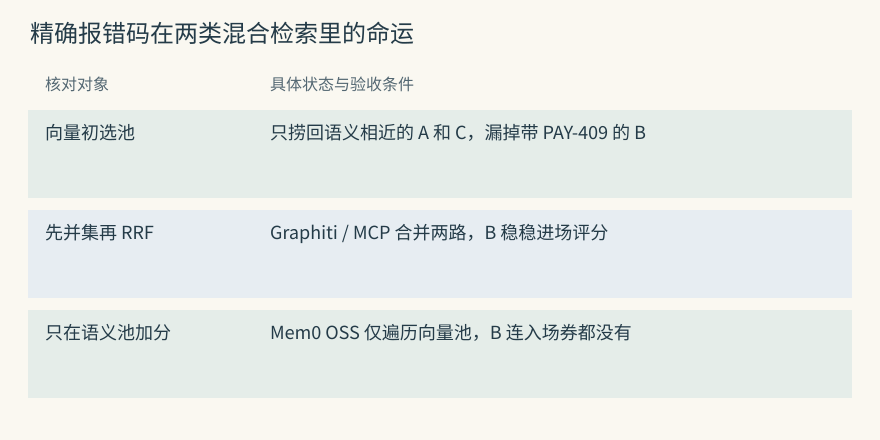
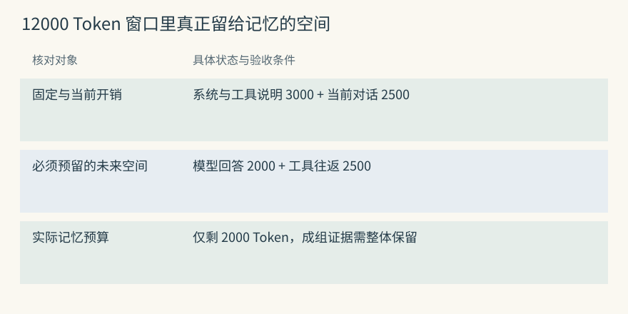
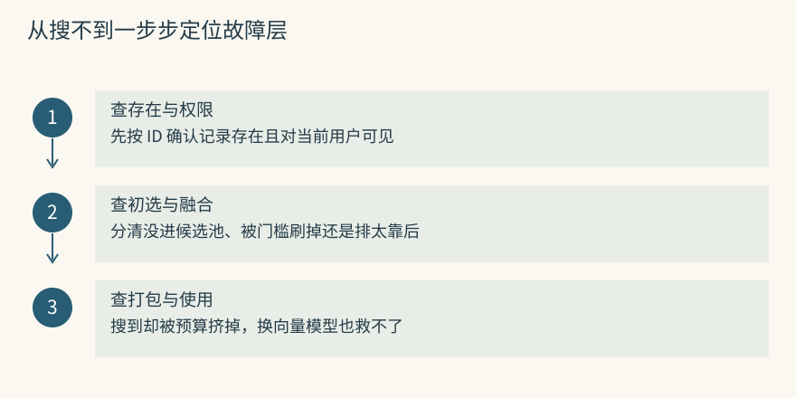

检索、重排与上下文预算
先拿三条真实记录，看看搜索到底会漏什么
假设林远有权限读取团队里的三条记录：
A：payment-gateway 发版前必须运行 check_idempotency，核对幂等键 TTL 覆盖重试窗口。
B：报错 PAY-409 通常由上游超时重试窗口大于防重放缓存过期时间引起，先核对缓存配置。
C：payment-gateway 的 Grafana 监控大盘链接在团队首页第二行。今天林远问：“发 payment-gateway 遇到 PAY-409 要先查什么？”
- A 带服务名和检查函数名，直接贴题；
- B 压根没写
payment-gateway这几个字，但精准命中了错误码PAY-409，而且换了说法解释了同一个坑； - C 虽然命中了
payment-gateway，但对发版排查毫无帮助。
检索干的绝不只是算一个余弦相似度，而是四道串联的关口：权限硬过滤 → 候选召回 → 融合重排 → 预算打包。而且永远记住第一原则——权限过滤一定在相关性打分之前。就算同事陈明的私人草稿里恰好一字不差写着 PAY-409 的解法，也不能进入林远的候选池。
关键词检索 vs 向量检索：谁补谁的短板
- 全文 / BM25 检索：专治精确标识符——错误码
PAY-409、函数名check_idempotency、接口路径/v2/charge、版本号v2.14。BM25 会综合词频、逆文档频率和文档长度打分，但碰上“幂等键”和“防重放缓存”这种不同措辞就束手无策；中文分词和连字符切分（PAY-409被切成两个词还是保留整体）也会直接左右命中率。 - 向量（Embedding）检索：把文字投射成向量比方向，擅长把“幂等键覆盖重试窗口”和“防重放缓存覆盖超时重试”拉到一起。但它天生有两个短板：一是对无语义特征的精确报错码和工单编号不敏感；二是只看主题接近，不管真假和否定——“幂等键已配置”和“幂等键未配置”在向量空间里几乎贴在一起！
另外，向量检索有个经常被踩的生产坑：查询向量和入库向量必须来自兼容的同一模型空间。某些 embedding provider 还会区分 "search" 和 "add" 两种编码前缀；哪怕换了同维度的新模型，直接拿新向量查旧索引也会静默失效。
最隐蔽的架构分水岭：先取并集，还是只在向量池内加分？
同样在 README 里大字写着“支持 Hybrid Search（混合检索）”，底层控制流却藏着一个足以酿成线上事故的巨大差异：全文检索单独捞出来的记录，到底有没有资格进最终名单？
继续看刚才的例子：你查 PAY-409，向量检索没太理解这个编号，只捞回 {A, C}；全文检索精准捞回了 {B, A}。
- 路线一：先取并集，再统一融合排序（Graphiti、MCP Memory Service）
两路结果先合并成
{A, B, C}，再去算综合名次。B 稳稳拿到入场券，完全有机会冲到第一名。 - 路线二：只在向量初选池内加分（Mem0 开源当前同步快照）
先扩大拉出一个向量初选池
{A, C}，然后遍历这个池子，把 BM25 分数和实体关联分数当成“加分项”叠上去。B 从头到尾没进向量池，哪怕你把关键词权重调到天上去，B 也永远进不了最终结果！
源码核验：Mem0、Graphiti 与 MCP 怎么算混合分数（选读）

Mem0（2026-11 快照实测）：先过语义硬门槛，再按活跃信号除分母
我们直接核对了 2026-11-18 最新快照里的 scoring.py，score_and_rank() 的真实控制流依然非常明确：
- 循环对象是
semantic_results：bm25_scores和entity_boosts只是按mem_id查表的字典，不会往候选池里插新 ID； - 先过语义硬门槛：
if semantic_score < threshold: continue——如果阈值设0.2，某条记录语义分只有0.19，哪怕 BM25 和实体分拉满，照样直接被跳过； - BM25 Sigmoid 归一化：
get_bm25_params()按词数选参数（<= 3个词时midpoint=5.0, steepness=0.7，原始分 5 映射为 0.5）； - 动态分母合成：
max_possible按本次查询整体有没有非空信号决定——仅语义是1.0，加 BM25 是2.0，再加实体（权重0.5）是2.5。所以如果本次查询整体有 BM25 和实体信号，记录 A（0.72 + 0.60 + 0.18）得1.50 / 2.5 = 0.60；而语义同为0.72但没命中关键词和实体的记录，得0.72 / 2.5 = 0.288。注意这不是 RRF！
Graphiti（2026-11 快照实测）：先并集再 RRF，且默认 rank_const=1
翻开 2026-11-20 最新快照的 search_utils.py，edge_search() 会把全文、向量和可选 BFS 的结果按边 UUID 汇总取并集，再交给 rrf()：
def rrf(results: list[list[str]], rank_const=1, min_score: float = 0):
for result in results:
for i, uuid in enumerate(result):
scores[uuid] += 1 / (i + rank_const)看清楚那个默认参数：rank_const=1！教科书里的 RRF 常用 k=60（名次靠前差别平缓），但 Graphiti 默认用的是 1/r（第 1 名 1.0，第 2 名 0.5，第 3 名 0.333）！
- 举个算例：A 在全文排第 2、向量排第 3；B 只在全文排第 1。
- 按教科书
k=20：A 得1/22 + 1/23 ≈ 0.0889，B 得1/21 ≈ 0.0476→ A 排前面； - 按 Graphiti 默认
rank_const=1：A 得1/2 + 1/3 ≈ 0.8333，B 得1/1 = 1.0→ B 排前面！ 头部名次陡峭度天差地别，且最终得分完全可能超过1.0，绝不能当成概率去理解。
MCP Memory Service（v13.0.0 实测）：独立并集 + as_of 历史过滤
查看 2026-11-20 最新 hybrid.py，retrieve_hybrid() 并行跑 FTS5 BM25 和向量查询，按 content_hash 取并集，对只在全文路命中的记录专门回库补取正文；v13.0 还补上了 as_of 历史时间点支持（历史查询时不过早排除后来才被替代的记录）以及 FTS5 trigram 对短词查询的回退处理。
重排（Rerank）和上下文打包：搜到第一名，也可能进不了 Prompt
拿到融合后的 Top-N 列表，后面还有两道关：
- 重排（Cross-Encoder / Jev 判别器）：把“用户问题 + 单条候选文本”拼一起做精排，能很轻松地把 C（Grafana 大盘链接）踢下去。但记住：重排器只能给传进来的候选排座次，救不回没进池的 B；而且像 Graphiti 的边 Cross-Encoder 会先用 RRF 截断到
2 * limit再重排，Mem0 的重排异常时会静默降级回原顺序，日志里一定要把“是否触发重排降级”记下来。 - 上下文打包与真实 Token 预算：别看着模型窗口写着 128K 就随便塞！算一笔真实的账：

假如这次调用分配的总窗口是 12,000 Token：系统指令和工具 Schema 占 3,000，当前对话和已有日志占 2,500，给模型输出留 2,000，给后续工具调用往返留 2,500——真正留给记忆的只剩 2,000 Token！
打包时坚持三条工程经验：
- 稳定偏好别进相似度竞赛：林远的“中文回复、先给 diff”单独走直读通道，免得搜
PAY-409时因为字面不相关被挤出 Top-K； - 成组证据要整体保留：查“发布终审人”至少要同时保留“服务归属基础交易组”和“基础交易组终审人是老李”两条证据，只装一半等于白装；
- 连出处、日期和包装标签一起算 Tokenizer：两条短事实只有 80 Token，但展开原始事故单后可能暴涨到 1,800 Token，预算检查一定要放在最终拼装完之后。
搜不到东西？用“六格排查表”三分钟定责
线上遇到“明明记过了却没用上”，别靠猜，给预期记录拉一行六格布尔表，第一个变成“否”的列就是根因：
- 存在吗？ 直接按 ID 查库——不在就查写入管线；
- 可见吗？ 检查用户权限、项目范围、有效期——无权看到其实是安全防线起效了；
- 进初选池了吗？ 查全文、向量各路原始 ID——没进池就查分词、Embedding 版本或池内加分边界；
- 过门槛了吗？ 查
threshold/min_score——语义门槛太高会把精确编号挡掉； - 留进 Top-K 了吗？ 查融合常量与重排结果——排第 7 而你只取前 5；
- 装进最终 Prompt 了吗？ 查打包日志——排第 1 但文本太长被预算跳过了！
实现笔记：主流项目检索控制流横向拆解（选读）
不同框架的“检索”底层干的事差别极大，调优前先对号入座：
- Mem0：语义 over-fetch 池
max(limit * 4, 60)→ 语义门槛过滤 → 叠加 BM25 Sigmoid 与实体 boost → 可选RerankerFactory重排。explain=True只能解释过门槛项的分项，看不出池外漏了谁。 - Graphiti：search_config.py 支持对 Edge / Node / Episode / Community 分别配 cosine、BM25、BFS，以及 RRF、Cross-Encoder、MMR、中心距离、
episode_mentions五类重排。注意基础search()默认只搜边且不自动多跳 BFS。 - Hippo Memory（v3.12.0）：hybrid.ts 支持
blend和rrf两种融合，融合后还会叠加 strength、recency、outcome 等生命周期系数；而多跳图扩展 recall.ts 可以从词法种子沿关系图拉回池外记录，并支持asOf双时间过滤。 - HippoRAG / Basic / A-MEM：HippoRAG 用三元组和段落种子跑 PPR 传播；Basic Memory 已知
memory://URI 时直接精准读取再限深展开关系；A-MEM 先取近邻再补links邻居，但最后[:k]截断容易把邻居挤掉。 - 什么时候才值得上“图检索”？ 如果你的问题 90% 都是“发
payment-gateway前查什么”，受限的“全文 + 向量并集”早就够用且好维护；只有当你攒出一批纯检索确实搞不定的两跳关联题（比如文档 A 和文档 B 毫无重合词，必须通过中间团队节点串联），再算清楚建图和消歧成本去上图。
动手检查
假设你排查“查询 PAY-409 时助手漏掉规程”的现场日志，发现：
- 记录 B（含
PAY-409）在全文路排第 1，但不在向量初选池； - 记录 A 进了两路且排第 1，但附带的原始复盘太长被预算打包跳过；
- 最终 Prompt 里只装进了无关的记录 C（Grafana 链接）。
如果有人提议“把 top_k 从 5 调大到 20 就好了”，为什么这治标不治本？你应该分别改哪两个控制点？
答案提示：单纯把 top_k 拉大到 20，只会把更多像 C 一样的无关监控链接塞进窗口，B 依然因为池外边界进不来，A 依然可能因为单条超预算被跳过。正确改法是两处分别动手：一是对精确报错码引入独立的全文候选并集（或扩大语义池 + 独立关键词补查）救回 B；二是把 A 拆成短规程 + 按需展开来源，或优化打包策略保住必要检查条件，同时检查排序为什么没把 C 压下去。

项目对照速查（选读）
本章对照结论
| 项目 | 候选是怎么生成的 | 排查漏召回时最独有的坑 |
|---|---|---|
| Mem0 | 语义初选池 + 池内 BM25 / 实体加分 | 精确编号掉在语义池外、被语义 threshold 提前刷掉 |
| Memobase | 稳定画像直接读 + 事件单独检索 | 画像与事件两条路分开评测，别混成一个指标 |
| Graphiti | 按对象（边/点/原文）配置多路并集 + RRF/CE | 默认 rank_const=1 头部极陡；基础 search() 不自动多跳 |
| Cognee | 按路由选块/图/Session Retriever | 有的路径直接生成答案而非返回原始证据 |
| HippoRAG | 事实与段落种子经 PPR 在图上传播 | 高连接泛化节点带噪、最终 reader 预算截断 |
| MemoryOS | 先筛中期主题摘要，再筛主题内 Page | 主题摘要漏词会直接挡住底下整批 Page |
| MemOS | 文本后端检索，或加载兼容 KV/LoRA | 不同物理形态模块不能套同一套文本召回指标 |
| Hippo Memory | BM25 + 向量融合 × 强度衰减 + 可选图召回 | 池内加权排序与池外图扩展（graphExpandRecall）要分开消融 |
| A-MEM | 向量近邻后追加 links 邻居 |
末端 [:k] 截断可能把刚补进来的邻居全切掉 |
| Letta Code | 根核心常驻 + 模型主动调工具查 MemFS/recall | 模型根本没意识到要调工具去翻笔记 |
| Basic Memory | 关键词搜索或已知 memory:// URI 限深展开 |
深度控制与最终 Token 预算要分开算 |
| MCP Memory Service | FTS5 BM25 与向量并行取并集（支持 as_of） |
各路过滤条件与 hash 补取必须保持权限一致 |
| TencentDB | ACL 授权资产内的混合检索 + Loadout 过滤 | 权限缓存与不同层级（L0~L3）的注入策略 |
| Hermes Jev Skills | 对已有候选做相关性、防注入与充分性判别 | 900 字符截断盲区与故障时的 unjudged 状态 |